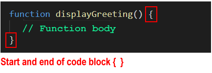
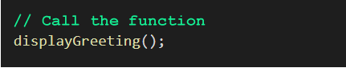
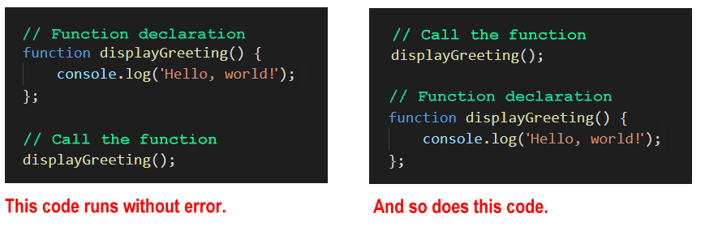
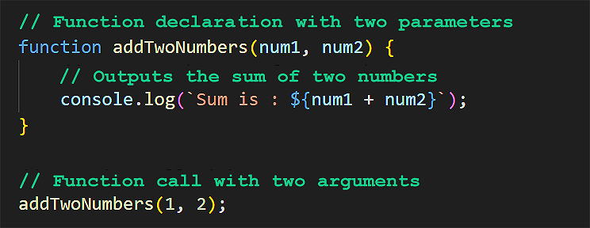
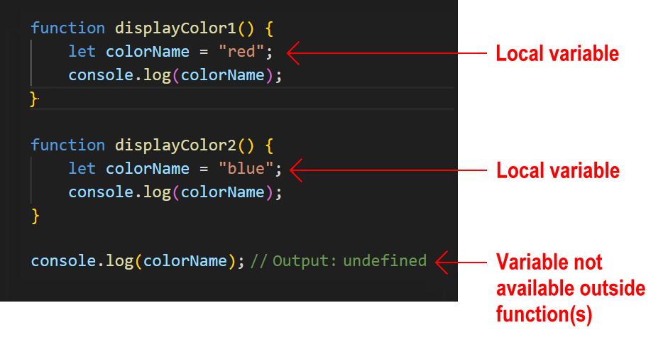

Learning Goals
At the end of this Tutorial, you will be able to:
- Create a function declaration.
- Pass input values as arguments to function parameters.
- Assign an output value returned by a function to a variable.
- Add default input values in function parameters.
- Know the difference between global and local function-scoped variables.
- Recognise that function declarations are hoisted.
In your javascript/exercises folder, create a new HTML file named workfile-3.html.
Add some sample text with a <h1> heading a <p> text paragraph.
Create a new empty text file named script-3.js and save it in this same folder.
Add a link to script-3.js in your workfile-3.html file using a <script> tag with the defer attribute.
About functions
Functions are the building blocks of a programming language. You can think of a function as a ‘box’ or ‘sub-program’ that stores some code inside it and often some values too.
In summary:
- A function is a block of code that performs a particular task.
- Whenever the program needs that task to be performed, it invokes (‘calls’ or ‘fires’ or ‘triggers’) the function and runs the code inside it.

Dividing your program into functions brings one huge advantage: You need to write the code inside functions only once – but the program can invoke and run the functions as many times as is needed.
In short, functions are reusable ♻️ code blocks.
Function names
In a JavaScript program, you can invoke a function by typing its name, followed by a parenthesis (). Usually, developers add a semi-colon ; at the end. For example:
displayMessage();
There is no space between the function name and the parenthesis.
Here are some important points about naming functions in JavaScript:
- Names must be unique: Not every function need to have a name. (Functions can be anonymous) But when a function has a name, that name must be unique. No two functions in the same scope may have the same name.
- No spaces or hyphens: Like variable names, function names may not contain spaces.
- Mixed character case: Developers typically combine upper and lowercase letters in a function name to make the name easier to read. This convention is known as camelCase. For example:
setFontSize()
calculateTax(). - Case sensitivity: Function names are case-sensitive. The following are two different function names:
UpdateTotal()
updateTOTAL()
It's always a good idea to start a function name with an imperative verb (an action word) that describes what the function does. For example:
addSomething()
updateSomething()
calculateSomething()
moveSomething()
displaySomething()
getData()
isValid()
Functions and code blocks
In JavaScript, a code block is some code inside curly braces { }. The code inside a function is named the function body and can contain one or more statements.
Typically, developers use the Tab key to indent the function body from the left to make the function easier to read.


JavaScript functions may be created in different ways. Two of the most common are function declarations and function expressions. See below.
Function declarations
One way to create a function is to declare it with the relevant JavaScript keyword, much in the same way you would declare a variable.
- You declare a variable with the const or let keywords.
- You declare a function with the function keyword.
Copy the sample function declaration below to your script-3.js JavaScript file.
// ======== FUNCTION DECLARATIONS ========
// Function declaration
function displayGreeting() {
console.log('Hello, world!');
}
// Outputs 'Hello, world!' to Console when called
Here is the syntax of a function declaration:
- Begins with the function keyword.

- Then, after a space, comes the function name.

- Then, without a space, is a pair of parentheses (). This may include one or more parameters separated by commas.

- Finally, inside a code block { }, you type the function's code.
Functions only run when they are called. You would call this function as shown below.
Update your script-3.js file as follows:
// Function declaration
function displayGreeting() {
console.log('Hello, world!');
}
displayGreeting(); // Outputs 'Hello, world!' to Console Function declarations and coding styles
Developers write function declarations in slightly different ways.
- The space after the pair of parenthesis () and before the opening brace { of the code block is optional.
- And some developers begin the code block { } on a new line. All three examples below will run correctly.

Function declarations are hoisted
Function variables are hoisted. This means you can call them before or after they are declared. Both of the code samples below will run without error.
Passing values to functions
Typically, you will want to provide some information to a function for the function to perform its task. You can think of this as ‘feeding’ the function.
Technically, ‘feeding’ a function is called passing a value to the function. You pass a value – or maybe multiple values – to a function when you invoke (call or fire) the function.
Parameters and arguments
A variable that stores the expected input to a function is called a parameter.
- You specify the parameter(s) expected by a function when you create the function.
- You type the parameter(s) inside the parenthesis () of the function.
See the examples below.

In the above example, the parameter product_price is part of the function declaration. In other words, it is created as part of the function. There is no need to create this parameter as a variable separately.
Parameters are what you specify when you create the function. Arguments are what you pass to the function when you call the function.

In the example above:
- A function is created with a parameter named num. This never changes.
- When the function is called, an argument of 21 is passed to the function. This argument value can be different every time you call the function.
Add the following to your script-3.js file:
// Function declaration with parameter
function showNumber(num) {
console.log(`Number passed as parameter is: ${num}`);
}
// Function call with argument
showNumber(21); Test your function by changing the argument value of 21 to a different number.
Functions with multiple parameters
A function may accept multiple parameters, separated by a , comma. The space between parameters is optional.
Copy the following to your script-3.js file:
// Function declaration with two parameters
function addTwoNumbers(num1, num2) {
// Outputs the sum of two numbers
console.log(`Sum is : ${num1 + num2}`);
}
// Function call with two arguments
addTwoNumbers(1, 2);
In JavaScript tutorials, you will often see the words ‘parameter’ and ‘argument’ written as follows:

Functions and return values
Consider the function below you previously entered to your file.
Note the following:
- The function accepts two input parameter values, adds them, and outputs the result to the web browser console.
- The functions does not return a value back to anywhere else in the program. (Or, more exactly, it automatically returns a value undefined. You will learned more this value in the Testing for weird values Tutorial.)
How can the calling code (the code outside the function) access and use the result of the function?
Two steps are required:
- Add a new last line to the function with the return keyword to send back the function's output to the calling code.

- Create a variable in the calling program and assign to it the output returned by the function.

Update your function in the script-3.js file as shown above and verify it runs correctly.
Another feature of the return keyword is that it stops the function from executing any further code. Any line(s) of code after the return statement are ignored.
You can verify this by updating your function as shown below:
// Function declaration with two parameters
function addTwoNumbers(num1, num2) {
// Returns the sum of two numbers
return (num1 + num2);
// Outputs the sum of two numbers
console.log(`Sum is : ${num1 + num2}`); // Line will not be executed
}
// Function call with two arguments
let result = addTwoNumbers(1, 2);
console.log(`Returned result: ${result}`);When you run the code, you will see that the line of code that outputs the sum of the two numbers is not executed.
No or too few arguments passed to a function
What happens if the number of arguments passed to a function is different to the number of parameters the function expects to receive?
Let's look at the two possibilities.
In this case, the function gives the missing parameter the default value of undefined.
Copy the following to your script-3.js file:
// Function declaration with one parameter that expects one argument
function showMessage(message) {
console.log(message);
}
// Function called without passing an argument
showMessage(); // Outputs 'undefined'
To prevent such a mistake from throwing an error in your code, you can assign a default value to a function parameter. Update your function as shown below.
function showMessage(message="An error occured. Contact support.") {
console.log(message);
}
showMessage(); // Outputs "An error occured. Contact support."
showMessage('Hi, there'); // Outputs 'Hi, there!'
This will prevent an error that would ‘freeze’ the code and prevent it running further.
Too many arguments passed to a function
In this case, the function simply ignores the excess arguments.
Copy the following to your script-3.js file:
// Too many parameters passed to function
function averageThreeNums(x, y, z) {
console.log(`Average of three numbers is: ${(x + y + z)/3}`);
}
averageThreeNums(1,2,3,4,5,6); // ignores 4, 5, 6
averageThreeNums(1,2,3,4,5); // ignores 4, 5
averageThreeNums(1,2,3,4); // ignores 4
averageThreeNums(1,2,3); // result is always '2'Utility functions
Functions that perform common tasks that are used repeatedly in a program are called utility functions. Examples of utility functions include:
- Validating user input
- Rounding the results of calculations.
Utility or functions help to keep your code organised, reduce redundancy, and improve maintainability by encapsulating specific functionality into reusable components.
Testing for numbers
A common utility or helper function is one that tests whether a variable is:
- A number, or
- Can be converted to a number
Because JavaScript is loosely-typed, it is a good idea to test variables are numbers (or are convertible to numbers) before using them in calculations.
See the example below.
// Function to check if value can be used in calculations
function isValidNumber(value) {
// 1. Convert the input to a number
const num = Number(value);
// 2. Check it is NOT "Not-a-Number" AND that it is Finite
return !isNaN(num) && isFinite(num);
}
// Test the argument
console.log(isValidNumber(123)); // true (Integer)
console.log(isValidNumber("12.34")); // true (String number)
console.log(isValidNumber("abc")); // false (String text)
console.log(isValidNumber(Infinity)); // false (Infinite number)Because this function returns a boolean (true or false), it is perfect for use inside if statements to prevent errors in your calculations.
Rounding numbers
Another common issue in JavaScript is rounding numbers for currency. Because computers store numbers in binary, 0.1 + 0.2 often results in 0.30000000000000004.
To fix this, we can create a utility function that shifts the decimal point, rounds the integer, and shifts it back.
Here's a function for precise decimal rounding. Add this to your script file:
function roundMoney(amount) {
// 1. Multiply by 100 to shift decimal (10.567 -> 1056.7)
// 2. Round to nearest integer (1056.7 -> 1057)
// 3. Divide by 100 to shift back (1057 -> 10.57)
return Math.round(amount * 100) / 100;
}
// Test the argument
console.log(roundMoney(10.567)); // Outputs: 10.57
console.log(roundMoney(10.564)); // Outputs: 10.56Note: Unlike the built-in toFixed(n) method which returns a string, this utility function keeps the result as a number, so you can still use it in math calculations.
Generating random numbers
JavaScript's built-in Math.random() only gives you a decimal between 0 and 1 (e.g., 0.435). To get a useful whole number within a specific range (like rolling a die between 1 and 6), we need a helper function to do the math for us.
// Function to generate a random integer between min and max (inclusive)
function getRandomInt(min, max) {
const range = max - min + 1;
return Math.floor(Math.random() * range) + min;
}
// Test: Rolling a die (1 to 6)
console.log(getRandomInt(1, 6));
// Test: Picking a random percentage (0 to 100)
console.log(getRandomInt(0, 100)); By wrapping this complex formula in a function, you never have to remember the math again. You just call getRandomInt(1, 10) whenever you need a number.
Functions and scope
The word scope means the availability of a variable or other item in a particular area of a program.
- Global scope: This is the area outside any functions in the program.
 Variables defined in the global scope can be accessed and altered from any function or code block anywhere in the program.
Variables defined in the global scope can be accessed and altered from any function or code block anywhere in the program. - Local scope: Variables declared inside a function are local to that function.  Every function has its own scope. The same variable name can be used in different functions because local variables are not accessible across functions.
Try it yourself
In your script file...
---
1. Area of rectangle
Create a function with parameters that calculates the area of a rectangle. The function should return its output to the calling program and display the result in the web browser console.
---
2. The Temperature Converter
Create a function named celsiusToFahrenheit that accepts a temperature in Celsius as a parameter.
- Inside the function, convert the temperature to Fahrenheit using the formula: (celsius * 1.8) + 32
- Return the result (do not just console.log it inside the function).
- Call the function with a value of 20 and output the returned result to the console.
---
3. The Price Calculator (Default Parameters)
Create a function named calculateTotal that takes two parameters: price and taxRate.
- Set a default value of 0.20 (20%) for the taxRate parameter.
- The function should return the total cost (price + tax).
- Test it twice: once passing both arguments, and once passing only the price (to test the default tax).
---
4. The Dice Roller (Using Utility Functions)
(Note: This exercise requires the getRandomInt utility function you created earlier).
Create a function named rollDie that accepts no parameters.
- Inside this function, call your getRandomInt(1, 6) utility function.
- Return a string that says: "You rolled a [number]".
- Call rollDie() three times to see different results.
YouTube videos
Below are links to two helpful YouTube videos about function declarations in JavaScipt.
More learning resources
Tutorial Quiz
Tutorial Podcast
Sample AI prompts
Explain why we use parameters in functions instead of just using global variables. What are the advantages of passing values through parameters?I have a function that calculates a student's average grade from three test scores. Show me how to handle cases where a teacher might enter only two scores or add an extra fourth score.What's the difference between these two functions and when would you use each approach:
function greet(name) {
console.log(`Hello ${name}`);
}
function greet(name) {
return `Hello ${name}`;
}What's wrong with this code and how can we fix it?
function calculateTotal(price, tax) {
total = price + tax;
return total;
}